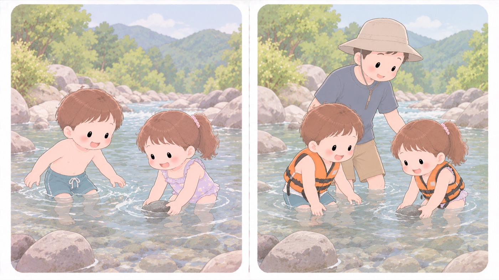

溺水を防ぐ
川遊び・海水浴
川は見た目より流れが速く、急に深くなる
令和7年に水難で亡くなった・行方不明になった中学生以下は27人で、場所は海12人・河川12人（それぞれ44.4%）、行為は水遊びが11人（40.7%）で最も多くなっています。足のつく浅瀬に見えても、川底の形と流れは数歩で変わります。

警察庁が挙げている、入る前に確かめること
| 近づかない場所 | 水（海）藻が繁茂している場所、水温の変化や水流の激しい場所、深みのある場所。事前に把握して、子どもを近づけません。 |
|---|---|
| 入らない天候 | 風雨や落雷などの天候不良時。上流で雨が降っているなど、河川の増水のおそれが高いとき。中洲や河原でのバーベキューも含みます。 |
| 海で入らないとき | 海岸の地形や沖合の台風などにより、離岸流岸から沖へ向かって流れる速い流れ。泳いで逆らうと戻れなくなるため、岸と平行に泳いで抜ける。や高波が発生するおそれが高いとき。 |
| 体調 | 体調が悪いときは、海にも河川にも入りません。 |
| 泳ぐ場所 | 「危険区域」と標示された区域に入らない。遊泳区域以外の水域で泳がない。標識や浮きを動かさない。 |
- すること：海や川では、体のサイズに合ったライフジャケットを着せる
警察庁は、幼児や泳げない学童等には必ず着用させ、保護する責任のある者が付き添って目を離さないよう求めています。釣りやボートでは大人も必ず着用します。 - すること：入る前に、流れ・深さ・川底を大人が確認する
上の表のとおりです。上流の天気まで見ます。晴れていても増水します。 - しないこと：子どもだけで川や海に行かせない
警察庁は「子供一人では水遊び等をさせず」、そのうえで保護する責任のある者が付き添うなどして目を離さないことを求めています。子どもが何人いても、大人が付き添わなければ「子どもだけ」と同じです。 - しないこと：遊泳区域の外で泳がせない
警察庁は、危険区域の標示内に入らないこと、遊泳区域以外の水域で遊泳しないことを挙げています。区域の外には監視員がいません。 - しないこと：「浅いから」で判断しない
行為別で最も多いのは、泳いでいるときではなく水遊び中です。膝までの深さでも、足を取られれば起き上がれません。
🛍 グッズの選び方
PR- ライフジャケットは体重に合ったサイズを選びます。大きすぎると水中で抜けます。
- 股下ベルト付きを選びます。これが無いと浮いた拍子に頭から抜けます。
- 桜マーク国土交通省が型式承認したライフジャケットに付くマーク。浮力などの基準を満たしている。（国土交通省型式承認）のある製品は、浮力と性能の基準を満たしています。
- オーシャンライフ 子供用ライフジャケット（船舶検査対応）船舶検査対応。浮力が確かめられているAmazonで見る →（新しいタブで開きます）
- Bluestorm 子供用 救命胴衣 BSJ-212Y Lサイズ（国土交通省型式承認・桜マーク・身長120〜150cm）桜マーク。身長120〜150cmに合うAmazonで見る →（新しいタブで開きます）
- スマホ防水ケース（IPX8・ネックストラップ）IPX8。水辺でも連絡できるAmazonで見る →（新しいタブで開きます）
- Bluestorm 子供用 救命胴衣 BSJ-212C Mサイズ（国土交通省型式承認・桜マーク・身長100〜120cm）桜マーク。身長100〜120cmに合うAmazonで見る →（新しいタブで開きます）
- キャプテンスタッグ 子供用 救命胴衣（国土交通省型式承認・桜マーク）桜マーク。サイズ展開が広いAmazonで見る →（新しいタブで開きます）
リンクはAmazonアソシエイトリンクです。当サイトはアフィリエイトプログラムに参加しています。Amazonのアソシエイトとして、当サイトは適格販売により収入を得ています。 選び方の方針
この項目の根拠
- 令和7年における水難の概況等（警察庁 生活安全局・PDF）（新しいタブで開きます）
令和7年の水難で、中学生以下の水難者は177人、うち死者・行方不明者は27人であったこと。中学生以下の死者・行方不明者27人について、発生場所別に多いのは海12人（44.4%）と河川12人（44.4%）であり、行為別に最も多いのは水遊び11人（40.7%）であったこと。危険箇所の把握として、水泳や水遊びでは水（海）藻が繁茂している場所、水温の変化や水流の激しい場所、深みのある場所等を事前に把握して近づかないこと。的確な状況判断として、風雨・落雷等の天候不良時や上流で雨が降っているなど河川の増水のおそれが高いときには釣りや水泳、中洲や河原でのバーベキューなどを行わないこと、海岸の地形や沖合で台風が発生しているなどにより離岸流や高波が発生するおそれが高いときは海に入らないこと、体調が悪いときは入らないこと。ライフジャケットの活用として、釣りやボート等で水辺に行くときは必ず着用（体のサイズに合った物を選び、正しく着用）すること。遊泳時の安全確保として、危険区域と標示された区域内に入らないこと、遊泳区域以外の水域で遊泳しないこと。保護者等の付添いとして、子供一人では水遊び等をさせず、幼児や泳げない学童等には必ずライフジャケットを着用させ、その者を保護する責任のある者が付き添うなどして目を離さないようにすること。